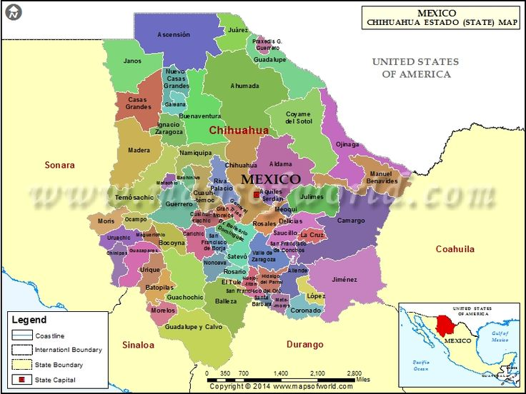

Los elementos que se muestran en una ventana pueden colocarse en un orden específico, dando prioridad a unos elementos sobre otros[cite: 1]:
Cuadro 1Cuadro 2Cuadro 3Cuadro 4
Texto sobre Imagen
Colocando texto en distintas posiciones sobre una imágen[cite: 1]:

Superior Izquierda
Superior Derecha
Inferior Izquierda
Inferior Derecha
Centrado
Reubicando un DIV
Se puede transformar la posición de un DIV con el método de trasladar[cite: 1]:
El método translate() altera la posición original de un elemento. El elemento DIV que se muestra aquí, está movido 50 pixeles a la derecha y 100 pixeles hacia abajo, a partir de su posición original[cite: 1].